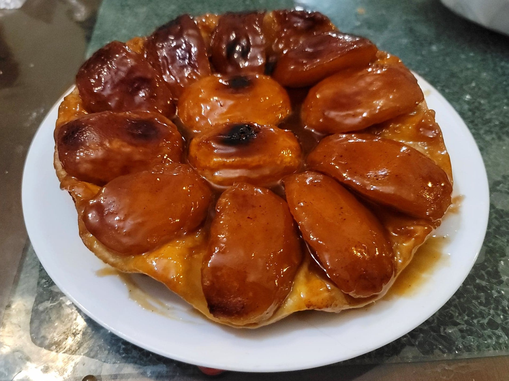

Tarte Tatin

Ingredients:
- 4-8 Apples
- 6 tbsp (80 g) Butter
- 2/3 cup (135 g) Sugar
- 1 sheet Puff pastry
Instructions:
- Peel and quarter the apples. Then slice out the cores. Optionally, let dry out in the fridge, uncovered, for 1-3 days. This will prevent the tarte tatin from becoming soggy.
- Preheat an oven to 375 degrees Fahrenheit.
- Melt the butter in a 10 inch cast iron skillet over medium heat. Then remove from the heat. Sprinkle the sugar evenly into the skillet. Then lay the apples in the skillet to somewhat resemble a flower.
- Roll the puff pastry into an at least 10x10 inch square. Then cut out a 10 inch diameter circle (use an upside-down large bowl or pan and cut around it). Lift out the circle and place it over the apples. Tuck the edges in with a rubber spatula.
- Heat the skillet over medium heat. Once you can see a golden brown juice bubbling around the edges, continue to cook for about 6-10 minutes or until the juice is darker brown and smells caramelized. Do not cook for over 10 minutes.
- Transfer the skillet to the oven. Let bake for 45-50 minutes, or until the puff pastry is golden and browned.
- Remove from the oven and let cool for about 5 minutes. Then carefully turn out onto a serving plate. Slice and serve hot with heavy cream, crème fraîche, or vanilla ice cream.